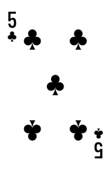

區塊鏈炸金花遊戲規則
簡介
區塊鏈炸金花秉承傳統的炸金花遊戲，特別加上SHA-256技術驗證卡牌，以確保遊戲公平公正。遊戲使用一副共52張撲克牌(不計大、小王)，每局「龍」、「鳳」兩家各派發3張牌，比較牌型/牌值大小決定勝負。遊戲裡，玩家可以投注「龍」、「鳳」，以及其他特殊牌型
獲勝條件
- 只計算3張牌的牌型/牌值，不比花色
- 押中牌型/牌值較大者，或/及押中勝出方的牌型者為贏
- 如果「龍」與「鳳」雙方各3張牌的牌型及牌值完全一致，則為「和局」，退回玩家所有下注籌碼
牌型及牌值比較
- 牌值大小：A > K > Q > J > 10 > 9 > 8 > 7 > 6 > 5 > 4 > 3 > 2，不分花色；若「龍」與「鳳」的牌型及牌值完全相同，則為「和局」
- 牌型大小：「豹子」 > 「同花順」 > 「同花」 > 「順子」 > 「對子」 > 「高牌」；雙方持相同牌型時，優先比較點數最大的牌，若點數相同則比第二大牌，以此類推
- 「豹子殺手」>「豹子」：當「豹子殺手」與「豹子」同時出現，「豹子殺手」比「豹子」為大
- 在沒有「豹子」的情況下，「豹子殺手」為最小牌型
- 「同花順」及「順子」牌型按順序比較：A K Q＞K Q J＞Q J 10＞J 10 9＞10 9 8 ＞9 8 7＞8 7 6＞7 6 5＞6 5 4＞5 4 3＞4 3 2＞3 2 A；當中以「A K Q」為最大，「3 2 A」為最小；只有在「同花順」和「順子」牌型中，「A」可作為最大或最小的牌，其餘牌型中「A」為最大的單牌
- 如果「龍」、「鳳」的首2張牌為對子，並且點數相同時，結果會以最後單牌的點數大小決定
牌型介紹
牌型
解釋
例子
豹子殺手
3張不同花色的5 3 2牌，2張相同花色或1張不同花色亦計算在內
豹子
3張點數相同的牌
例：A A A、2 2 2
例：A A A、2 2 2
同花順
花色相同的順子
例：黑桃9 8 7、紅心6 5 4。
最大的同花順為花色相同的A K Q，
最小的同花順為花色相同的3 2 A
例：黑桃9 8 7、紅心6 5 4。
最大的同花順為花色相同的A K Q，
最小的同花順為花色相同的3 2 A

同花
花色相同，非順子
例：黑桃8 6 3，梅花5 4 2。
例：黑桃8 6 3，梅花5 4 2。

順子
花色不同的順子
例：黑桃7 紅心6 方塊5。
最大的順子為花色不同的A K Q，
最小的順子為花色不同的3 2 A
注意：2 A K不是順子
例：黑桃7 紅心6 方塊5。
最大的順子為花色不同的A K Q，
最小的順子為花色不同的3 2 A
注意：2 A K不是順子
對子
2張點數相同的牌
- 雙方牌型為對子時，先比較對子點數大小；
- 若點數相同再比較單張牌的點數大小
高牌（又名散牌）
3張牌不能組成任何牌型
操作及下注指南
- 開局後，立刻開始下注倒時
- 「龍」、「鳳」各得3張暗牌（即牌面向下），並按照「龍」>「鳳」>「龍」>「鳳」>「龍」>「鳳」的順序派牌
- 在各個下注區押注籌碼後，表示押該選項贏；本遊戲共有7個下注區，包括：「龍」、「鳳」、「對8以上」、「豹子」、「同花順」、「同花」及「順子」
- 每個單注金額不能高於或低於已設置個人限紅的上、下限
- 若連續5局未下注，則會被強制退出遊戲檯
- 倒數結束後，遊戲檯會停止下注，而已確認之注碼均不得更改或取回
- 停止下注後，會先開「龍」方的首兩張牌，再開「鳳」方的首兩張牌；然後開「龍」方的第三張牌，最後開「鳳」方的第三張牌
- 牌型或牌值較大的一方即為獲勝方；如果雙方牌型及牌值完全一致，即為「和局」，會退回玩家所有下注籌碼；牌局結束後即洗牌。
- 如遇結算錯誤，按照當期視頻結果重新結算
派彩賠率
投注選項
賠率
龍
1賠0.97
鳳
1賠0.97
對8以上
(對9 - 對A、順子、同花、同花順、豹子)
1賠2
順子
1賠7
同花
1賠8
同花順
1賠100
豹子
1賠120
注意：
-
玩家下注以上玩法時，只有贏的一方以該牌型獲勝才算
例子：- 玩家下注「順子」，「龍」以「順子」贏了則按「順子」的賠率派彩
- 玩家下注「順子」，牌局結果「龍」為「順子」、「鳳」為「同花」，則玩家下注的「順子」為輸
- 雙方牌型相同時，優先比較點數最大的牌，若點數相同則比第二大牌，以此類推